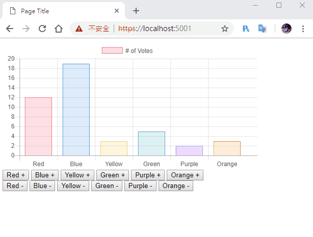

[鐵人賽Day16] 實作一個即時投票系統 (1) - 投票介面建置
文章目錄
今天我們要來實作一個即時投票系統，前端的圖表呈現部分，我們要依賴Chart.js這個JS函式庫，所以今天就先來帶大家瞭解一下Chart.js大概的使用方法。
首先創立一個新專案
dotnet new web -o VoteWeb
Signal套件該裝的弄好，忘記的回去看Day3
安裝Chart.js
CDN引入
<script src="https://cdnjs.cloudflare.com/ajax/libs/Chart.js/2.4.0/Chart.min.js"></script>
或NPM安裝
$ npm install chart.js --save
使用Chart.js
由於Chart.js是使用Canvas元素來畫報表的，所以先建立一個Canvas
<canvas id="myChart"></canvas>
開始繪製圖表
Chart.js的繪圖，只要照官方給定的格式，丟進Chart物件中，Chart.js就會幫我們畫出來，然後我們把官方給的範例套進去，物件格式大概像下面這樣
var chartData =
{
type: 'bar',
data: {
labels: ["Red", "Blue", "Yellow", "Green", "Purple", "Orange"],
datasets: [{
label: '# of Votes',
data: [12, 19, 3, 5, 2, 3],
backgroundColor: [
'rgba(255, 99, 132, 0.2)',
'rgba(54, 162, 235, 0.2)',
'rgba(255, 206, 86, 0.2)',
'rgba(75, 192, 192, 0.2)',
'rgba(153, 102, 255, 0.2)',
'rgba(255, 159, 64, 0.2)'
],
borderColor: [
'rgba(255,99,132,1)',
'rgba(54, 162, 235, 1)',
'rgba(255, 206, 86, 1)',
'rgba(75, 192, 192, 1)',
'rgba(153, 102, 255, 1)',
'rgba(255, 159, 64, 1)'
],
borderWidth: 1
}]
},
options: {
scales: {
yAxes: [{
ticks: {
beginAtZero:true
}
}]
}
}
}
大概介紹一下功能
- type：圖表的種類
- dataset：圖表資料，是一個array
- labels：圖表的標籤
- data：資料數值，資料是一個array
- backgroundColor：背景色，array對應上面的data
- borderColor：線條顏色，array也是對應上面的data
- borderWidth：線條寬度
- options：圖表設定
然後我們照官方範例做一遍，只要呼叫出Chart.js物件，把Canvas和資料塞進去就行。
var ctx = document.getElementById("myChart").getContext('2d');
var myChart = new Chart(ctx, chartData);
註：記得
new Chart要放在chartData下面
這時候執行應該就能看到圖表了，但是大小卻是充滿整個瀏覽器，所以我們要再Canvas外面包一個<div>元素，再給他長寬限制
<style>
.canvas {
width:500px;
}
</style>
<div class="canvas">
<canvas id="myChart"></canvas>
</div>
註：我發現限制height沒有作用，所以限制width就好
使用Chart.js API
接下來我們要讓圖表重新繪製，修改資料的方式有2種，一種是把資料放在一個變數裡修改，或是直接呼叫Chart.js物件，進到物件變數裡修改，之後再使用API的.update()重繪，圖表這時就會整個重新繪製。
首先我們要做一些投票的按鈕，投票和反對票分開2種按鈕
<div>
<button id="red" type="button">Red +</button>
<button id="blue" type="button">Blue +</button>
<button id="yellow" type="button">Yellow +</button>
<button id="green" type="button">Green +</button>
<button id="purple" type="button">Purple +</button>
<button id="orange" type="button">Orange +</button>
</div>
<div>
<button id="red2" type="button">Red -</button>
<button id="blue2" type="button">Blue -</button>
<button id="yellow2" type="button">Yellow -</button>
<button id="green2" type="button">Green -</button>
<button id="purple2" type="button">Purple -</button>
<button id="orange2" type="button">Orange -</button>
</div>
JS載入DOM元素
// 投票按鈕
var red = document.getElementById('red');
var blue = document.getElementById('blue');
var yellow = document.getElementById('yellow');
var green = document.getElementById('green');
var purple = document.getElementById('purple');
var orange = document.getElementById('orange');
// 反對票按鈕
var red2 = document.getElementById('red2');
var blue2 = document.getElementById('blue2');
var yellow2 = document.getElementById('yellow2');
var green2 = document.getElementById('green2');
var purple2 = document.getElementById('purple2');
var orange2 = document.getElementById('orange2');
再來建立投票事件，只要將數值+1，再把update()就行了，反對票則是倒過來。
// 投票事件
red.onclick = function(){
chartData.data.datasets[0].data[0]++;
myChart.update();
}
blue.onclick = function(){
chartData.data.datasets[0].data[1]++;
myChart.update();
}
yellow.onclick = function(){
chartData.data.datasets[0].data[2]++;
myChart.update();
}
green.onclick = function(){
chartData.data.datasets[0].data[3]++;
myChart.update();
}
purple.onclick = function(){
chartData.data.datasets[0].data[4]++;
myChart.update();
}
orange.onclick = function(){
chartData.data.datasets[0].data[5]++;
myChart.update();
}
// 反對票事件
red2.onclick = function(){
chartData.data.datasets[0].data[0]--;
myChart.update();
}
blue2.onclick = function(){
chartData.data.datasets[0].data[1]--;
myChart.update();
}
yellow2.onclick = function(){
chartData.data.datasets[0].data[2]--;
myChart.update();
}
green2.onclick = function(){
chartData.data.datasets[0].data[3]--;
myChart.update();
}
purple2.onclick = function(){
chartData.data.datasets[0].data[4]--;
myChart.update();
}
orange2.onclick = function(){
chartData.data.datasets[0].data[5]--;
myChart.update();
}
這樣大概就完成了，下一篇就是SignalR的連接了。
DEMO

其實Chart.js大部分的教學都是一次畫出，所以這篇我也是花了點時間做了點小測試，結果跟我想的一樣是可行的，可以邊改資料邊重繪圖表，那麼下一篇就開始與Signal做連線吧！！